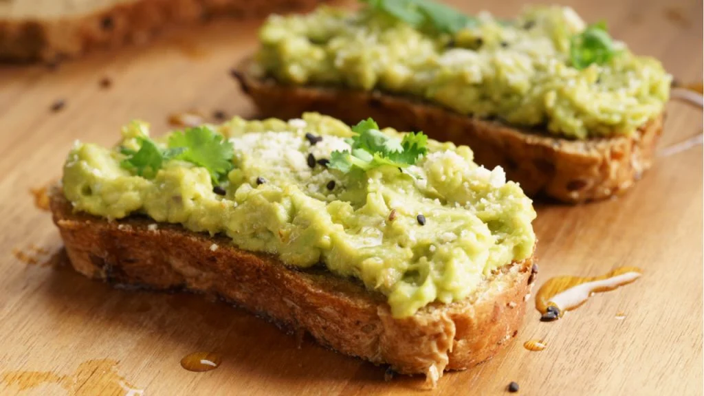

-Pan de molde
-Palta 1
-Sal a gusto
-Mayonesa 3 cucharadas
Utensilios:Bowl, tostadora, mixer/licuadora
*Primer paso:Pelamos la palta y le quitamos el carozo, luego metemos la palta en la licuadora o trituramos con el mixer.
*Segundo paso:Pasamos la palta al bowl, agregamos mayonesa y sal a gusto, para comenzar a mezclar durante un minuto.
*Tercer paso: Poner el pan a tostar y a disfrutar.
